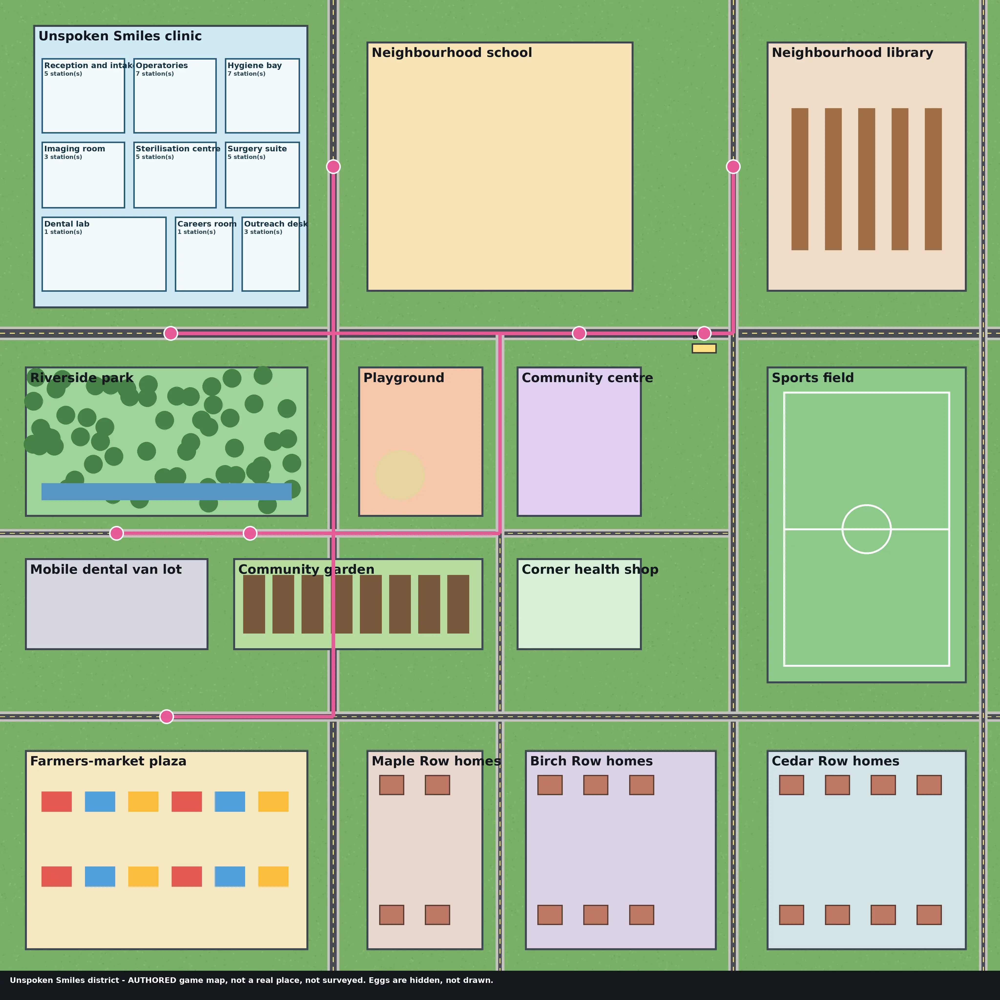

AUTHORED district · play and learn
Unspoken Smiles world
Walk a made-up neighbourhood around a dental clinic: open the clinic rooms to reach the training stations, then play brushing, flossing, snack, plaque, handwashing and drinks games and hunt for hidden tooth-fairy eggs.
AUTHORED A made-up district drawn for this game - not a real place, not surveyed. · Clinic programmes: Dental Careers — Unspoken Smiles (19) · Dental Hygiene — Unspoken Smiles (19)
Games, eggs and badges are play: kept on this device only, never a completion record, never money.
3D is not available in this browser; the games, rooms and map below still work.

Hygiene games
General guidance, not medical or dental advice.
Clinic rooms and stations
The grouping of stations into rooms is AUTHORED for this district; the stations themselves are the programme's, linked at their source. Stations from: AGIFutureFoundation/vr-safety-training@9914455d742b
Reception and intake 5
- Patient Intake Screening
patient-intake-screening - Medical History & Medication Review
dn-medical-history-and-medication-review - Front Office & Treatment Coordination
front-office-treatment-coordination - Dental Coding, Billing & Pre-authorisation
dn-dental-coding-billing-and-preauthorisation - Teledentistry & Triage
teledentistry-and-triage
Operatories 7
- Four-Handed Dentistry
four-handed-dentistry - Operatory Turnover
operatory-turnover - Endodontic Assisting
endodontic-assisting - Orthodontic Assisting
orthodontic-assisting - Denture Delivery & Adjustment
denture-delivery-and-adjustment - Special Needs & Geriatric Dentistry
special-needs-and-geriatric-dentistry - Pediatric Visit
pediatric-visit
Hygiene bay 7
- Periodontal Charting
periodontal-charting - Ultrasonic Scaling
ultrasonic-scaling - Fluoride and Sealants
fluoride-and-sealants - Aerosol Management
aerosol-management - Oral Cancer Screening
oral-cancer-screening - Oral Hygiene Instruction & Motivational Interviewing
dn-oral-hygiene-instruction-and-motivational-interviewing - Nitrous Oxide Monitoring
nitrous-oxide-monitoring
Imaging room 3
- Full-Mouth Radiographic Series
dental-radiography-fmx - Radiograph Safety
radiograph-safety - Digital Intraoral Scanning & CAD/CAM
dn-digital-intraoral-scanning-and-cad-cam
Sterilisation centre 5
- Sterilisation Centre
sterilisation-technician-cycle - Instrument Reprocessing
instrument-reprocessing - Infection Control Audit
infection-control-audit - Sharps Exposure Response
sharps-exposure-response - Amalgam Waste Handling
amalgam-waste-handling
Surgery suite 5
- Oral Surgery Assisting
oral-surgery-assisting - Implant Surgery Assisting
implant-surgery-assisting - Chairside Emergency
chairside-emergency - Dental Trauma & Avulsed Tooth Response
dn-dental-trauma-and-avulsed-tooth-response - Draw Station
phlebotomy
Dental lab 1
- Dental Laboratory Bench
dental-lab-bench
Careers room 1
- Dental Careers Pathway
dental-careers-pathway
Outreach desk 3
- Mobile Dental Outreach
mobile-dental-outreach - School Screening Outreach
school-screening-outreach - Public Health Dentistry & Fluoridation Advocacy
dn-public-health-dentistry-and-fluoridation-advocacy
Tooth-fairy eggs
- The tooth fairy dropped a coin Where do tired walkers rest by the river?
- The golden toothbrush Two minutes, twice a day - find the brush that shines at school.
- A lost baby molar Something small and white is buried where kids dig.
- The floss rainbow Between the teeth and between the walls - look for a thread of colour.
- The van's secret sticker The clinic on wheels hides a smile sticker.
- The sugar bug poster A sneaky bug loves sticky sweets - find its poster in the shop.
- The giant model molar The lab bench keeps a tooth far too big for any mouth.
- The crunchy carrot A crunchy snack grows in the ground near the van lot.
- The picture book about teeth A quiet place with many stories hides one about smiles.
- The team water bottle Thirsty after the match? Look by the bench.
- The lost mouthguard Players protect their smiles near the goal.
- The check-up reminder card Wait for the bus and read the reminder.
- The crunchy apple A market stall keeps a crunchy, tooth-friendly snack.
- The bubbly soap bar Someone left soap by a porch on Maple Row.
- The old frayed toothbrush A worn-out brush waits in a Birch Row garden.
- The kitchen tap Clean water flows in a Cedar Row kitchen.
District map
AUTHORED game district - not a real place, not surveyed; Unspoken Smiles is named only as the programme the clinic stations belong to (no endorsement, partnership or clinical claim). AUTHORED loop along the district's street centrelines; the van timetable is not modelled.
- Unspoken Smiles clinic
- Neighbourhood school
- Riverside park
- Playground
- Community centre
- Corner health shop
- Mobile dental van lot
- Community garden
- Neighbourhood library
- Sports field
- Bus stop
- Farmers-market plaza
- Maple Row homes
- Birch Row homes
- Cedar Row homes
smiles/registry/smiles.json · smiles/1 · stamp 739543dc89a8e019fe152cda83b95b59a63c45b7e133dac3cdf4b3019158fb01